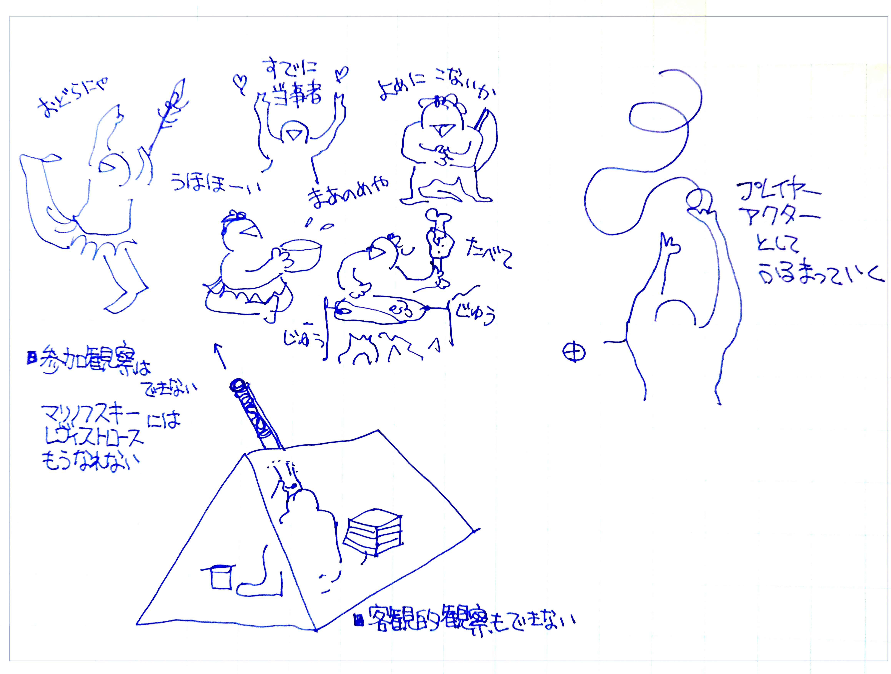
三条マルシェの魅力と熱量に、デザイン知のあらたな価値を見い出し、研究と実践を続けている。
人気のない中心市街地に、突如にぎやかなまちが現れ、5時間後、蜃気楼のように消える。2010年9月の第1回開催以来、人口約10万人の都市で来場者数最大98,000人（2013年10月）を記録したこともある、地域を代表するイベントである。会場は毎回異なり、市内商店街やランドマークを巡回して開催される。３１１を乗り越えコロナ禍でも存続している。主に市民ボランティアによる三条マルシェ実行委員会が運営する。
※ 2025年度まで
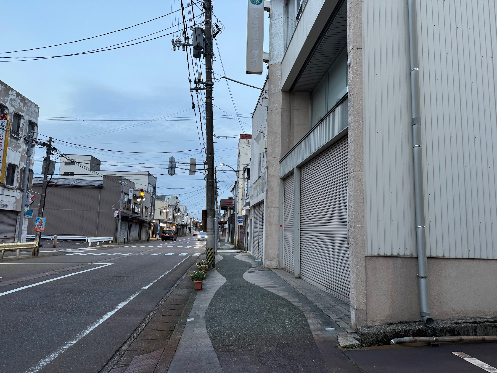
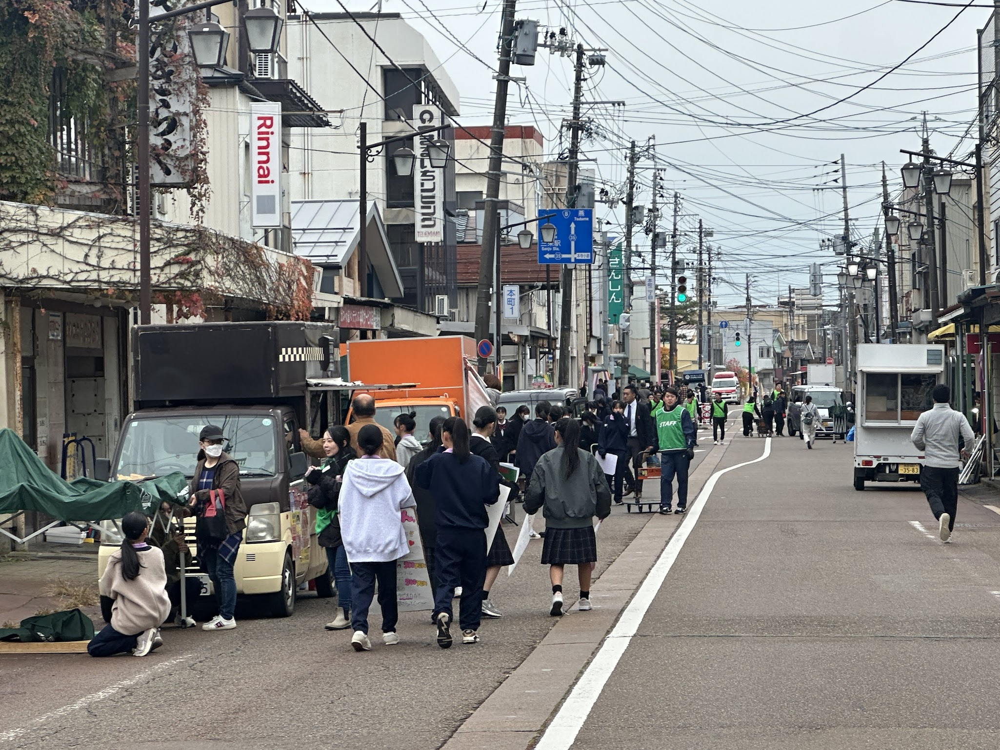
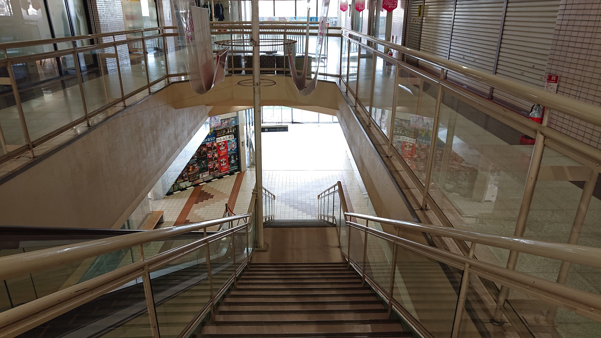
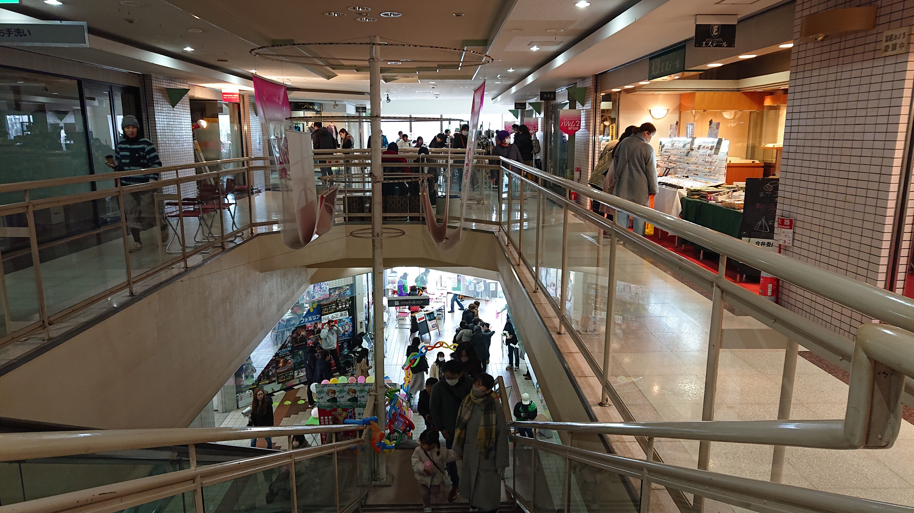
マルシェには人々が「ハレ」の場を楽しみにやってくる。目新しいグルメや手の込んだ品々を吟味しながら、会場のあちこちで挨拶が交わされる。子どもたちもおしゃれをしてやってくる。彼らにとっては、生まれた時からある「にぎやかなまち」なのだ。
高校生ボランティアが委員となって１０年以上も従事している。もちろん、立ち上げ時からのメンバーも多数在籍している。ちょっと前に居住してきた若者や市内の大学生も手伝いに来る。来場者だけではなく、運営側の熱気も尋常ではない。ステージではライブやダンス、パフォーマンスが繰り広げられ、部活や習い事の発表会、素人プロレスやチンドン屋など毎回毎回新コンテンツがやってくる。結婚式まで開催されたことがある。警察、消防、陸上自衛隊も常連さんだ。
マルシェは決して「まつり」ではない。しかし日常の商店街でもない。関わる全員がちょっとだけ「理想のまち」を創ろうとしている。「理想の市民」をふるまっているのかもしれない。
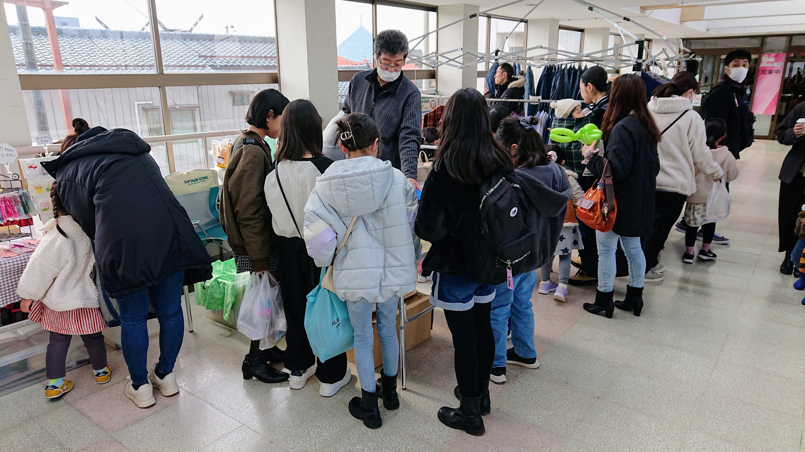

三条マルシェの構造を「マルシェ的環世界」として概念化し、デザイン学研究として論文化・学会発表を続けている。2023年、日本デザイン学会第一支部大会を三条マルシェ会場で開催し、研究者・実行委員・来場者が同じ場に交差した。
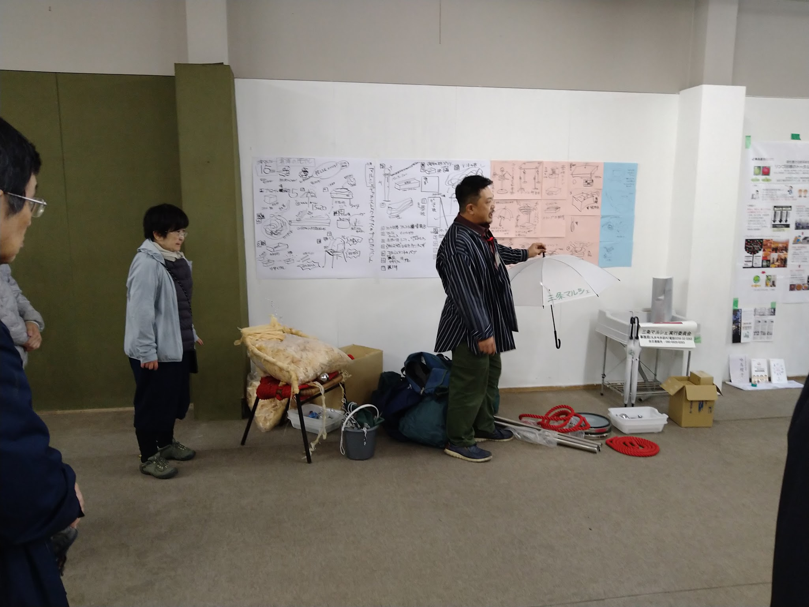
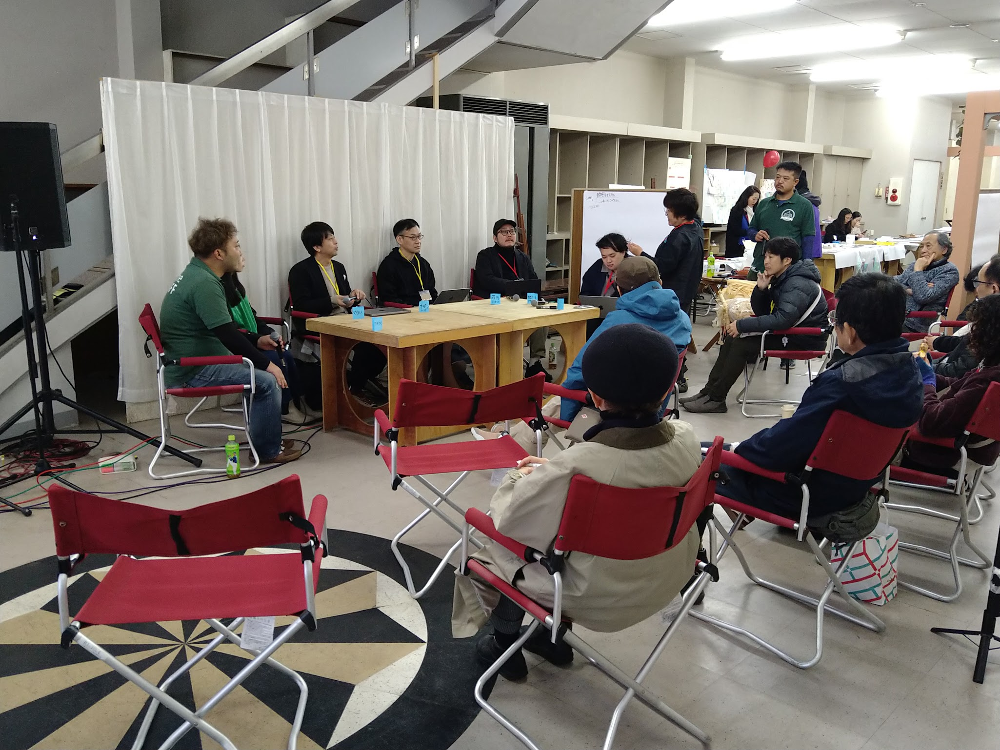
10代から70代、異なる職種のボランティアが運営を担う。月1回の実行委員会会議は深夜まで及ぶことがある。テント設営・バミはり・ミセツケ・ゴミ分別——すべてのタスクに熟達した、10年選手のイベントプロたちがいる。欲しいものはすぐに誰かが作る。ものづくりのまちならではの即興的な問題解決が、現場を支えている。
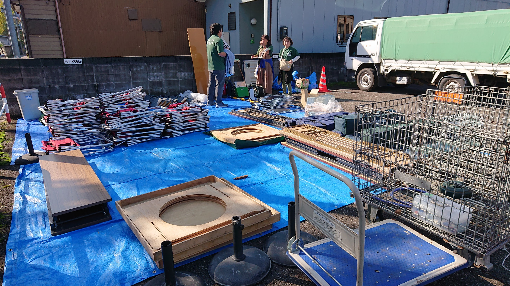
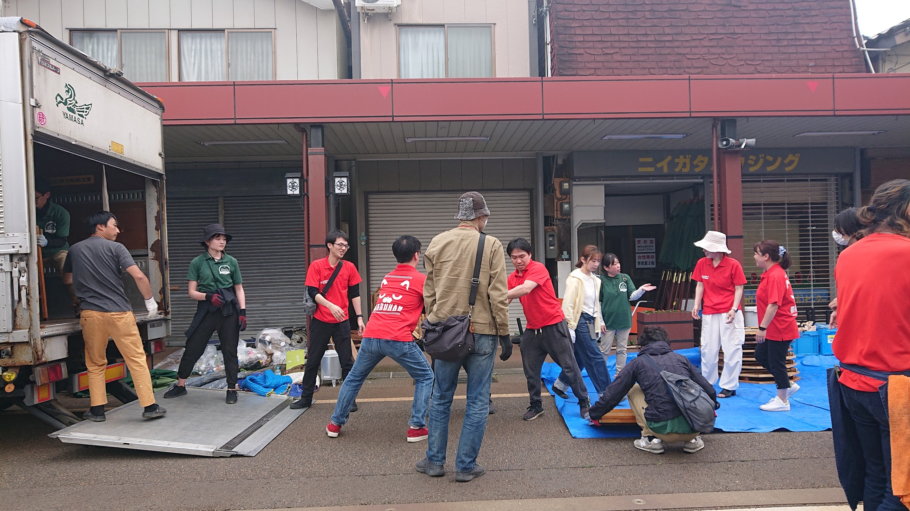
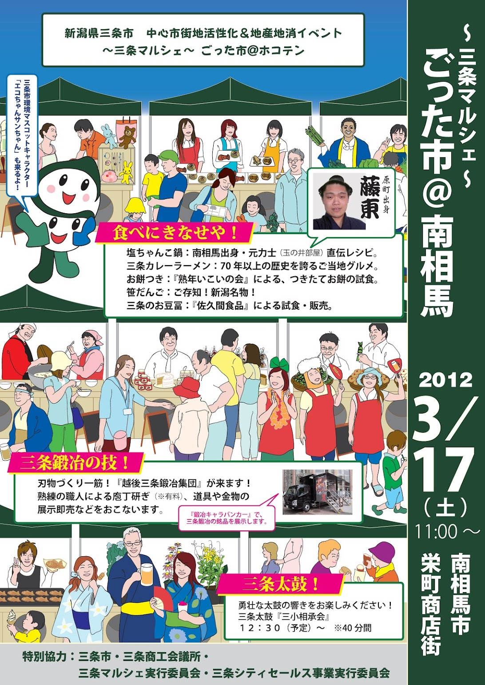
2010_2011ポスターを制作。役所や出店者たちの似顔絵が、イベントへの共感を得るツールとなった。写真は2012年南相馬市復興イベントへの応援出店時のもの